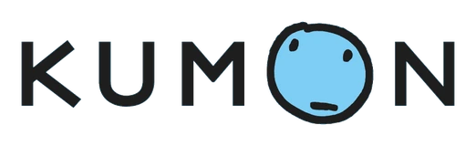

SWE Intern @ Nebo Agency · prev Carnival · ML @ Oasis · CS @ UCF. I build AI-powered systems at the intersection of full-stack engineering and creative problem-solving.
3×Hackathon Awards
3.8UCF GPA
20+Technologies
About
Building at the intersection of AI, engineering, and real-world impact.
I'm a Computer Science student at UCF who builds AI-powered systems that solve real problems. Right now I'm a software engineering intern at Nebo Agency, building mobile-first features across two clients' live WordPress sites. Before that I spent a summer at Carnival (Princess Cruises) building a retrieval-augmented assistant for 100+ engineers, and earlier an ML engineering internship at Oasis where I built a heterogeneous GNN recommendation engine and cut their nightly pipeline from 45 minutes to 8.
My work spans AI/ML, full-stack development, and robotics. I've been awarded at three hackathons running — ShellHacks, Hack The Bay and HackaBull — building hardware-software systems under 24 hours. I care about how the code is built, not just whether it runs.
Away from the screen I am usually in the gym and weightlifting is the thing that actually clears my head. The rest of the time it is pickleball, basketball, or whatever game has my attention that month. I am a lifelong LeBron guy and will happily defend that to anyone who brings it up. I also sing, with considerably more enthusiasm than technique.
Pull back away from the hoop and let go — like a slingshot. The arrow shows where the shot goes. Swish for 3, off the rim for 2. Walk with the arrows (or ← →).
Took 3rd overall at ShellHacks 2026, Florida’s largest hackathon, against 300+ projects and 1,400+ hackers. Paradise guides DeafBlind users by touch alone — wrist-mounted Joy-Cons buzz left, right, forward, and a double buzz on arrival — walking someone to a waiting Waymo and steering their hand onto the door handle. Five computer-vision models run across a chest-mounted phone and a laptop inside a 50 ms guidance loop: YOLOv10s on the phone over WebGPU, Depth Anything V2 turning relative depth into metric obstacle stops via a RANSAC floor-plane fit, and a CLIP ViT-B/32 classifier trained on 779 vehicle crops to pick the right robotaxi out of look-alikes — 89% recall at 96% precision, 4 false positives across 654 negatives under 5-fold grouped cross-validation. Moving Grounding DINO onto ONNX Runtime workers cut open-vocabulary detection from 14 s to 1.2 s per frame. Built with Akhilesh Reddy Mallu, Devam Dholakia and Pranavsai Gandikota.
Best Use of ElevenLabs — HackaBull VII 2026Featured
Revive — Emergency CPR Training System
Next.js 16 · React 19 · TypeScript · Arduino UNO R4 Minima · Gemini 2.5 Flash · ElevenLabs TTS · Web Serial API · Tailwind CSS 4 · Vitest
Won Best Use of ElevenLabs at HackaBull VII, among 58 projects, with a hardware-software CPR training system that turns $50 of Arduino hardware into a full cardiac emergency simulation. A force-sensitive pad streams compression peaks over Web Serial at 100Hz — Gemini 2.5 Flash generates live patient scenarios, simulates real-time physiology (HR, BP, SpO2, rhythm) based on your depth and rate, and coaches you via three distinct ElevenLabs voices (calm instructor, 911 dispatcher, panicked bystander) with sub-50ms correction latency. Your eyes stay on the patient. Fully scored against AHA protocol with a detailed session debrief. 222 Vitest tests. Triple fallback chain: pad disconnected → keyboard mode, Gemini timeout → cached scenarios, ElevenLabs down → browser SpeechSynthesis.
Won 1st in the Zenardy Challenge and Best Use of Gemini at Hack The Bay 2026, placing 3rd overall of 34 projects, with a real-time AI role-play platform for high-stakes conversation practice — salary negotiations, HR disputes, legal client intake. An AI plays the other person while MediaPipe tracks webcam body language (eye contact, posture, fidgeting) and LiveKit analyzes voice (pace, filler words, energy) simultaneously. For the Legal Intake scenario, a custom Levenshtein + Jaccard fuzzy-matching engine extracts named entities from live conversation transcripts and surfaces opposing-party conflicts against a firm database in real time — before the meeting is even over.
Built an autonomous robot from scratch that navigates unknown environments using AI vision and spatial mapping. Integrated Arduino motor control with iPhone LiDAR for real-time obstacle avoidance and path planning. Connected Flask API + React dashboard for live telemetry and control with sub-250ms feedback latency. Improved navigation reliability by 40% vs ESP32 prototype through adaptive mapping and motor feedback loops.
Created a fintech web app benchmarking 300+ U.S. credit cards using CFPB data and scraped issuer information, producing a transparent scoring algorithm for informed decision-making. Built interactive sliders and analytics charts for real-time fee, APR, and reward comparisons. Collaborated in a 4-member team following CI/CD practices and type-safe API design with Zod validation. Deployed on Vercel for seamless user experience.
React · Node.js · TypeScript · Firebase · Google Gemini API · Docker · OCR
AI-powered tool helping immigrants identify tax form errors using OCR and natural language processing. Developed an intelligent system to parse and summarize U.S. tax PDFs using Gemini API for document parsing and error explanation. Implemented Firebase rules and audit logging to ensure secure document access. Featured PDF uploads, form detection, fallback logic, and rate-limiting for production-ready deployment. Major university-sponsored project.
AI-powered scam detection tool that analyzes suspicious messages, emails, and websites to protect users from fraud. Built an OCR → LLM pipeline with schema validation, fallback logic, and timeout resilience achieving 95% uptime. Created an explainable red-flag panel combining GPT reasoning + regex severity scoring. Developed a Chrome extension for instant webpage analysis with debounced listeners and secure REST calls. Backend deployed on Render for scalability.
Dynamic weather dashboard with real-time data visualization and weather-responsive backgrounds. Features city-based weather search, interactive temperature/humidity charts, and intelligent background changes that adapt to current weather conditions using Flask backend and OpenWeatherMap integration. Demonstrates full-stack capabilities with seamless API integration and responsive design.
HTML · CSS · JavaScript · UX Research · UI/UX Design
Co-authored a 9-page research paper for an AI-powered tutor-matching system at UCF. Built an interactive UI demo simulating live tutor-student pairing with subject and availability input fields, responsive output panel, and frontend-only logic. Focuses on improving educational accessibility through intelligent matching algorithms.
Authored a comprehensive beginner-friendly installation and usage guide for Python's IDLE environment. Included detailed screenshots, simplified setup instructions, and troubleshooting section to help new programmers get started with Python development. Demonstrates technical communication skills and commitment to making programming accessible.
Nebo Agency · PHP, MySQL/MariaDB, Docker, WSL2, Azure Front Door, SCSS, Gulp
Full-stack feature work on two retainer clients’ production sites — and the performance and deploy debugging underneath it.
Cut page loads 15× (26s to 1.7s) by profiling a Dockerized PHP/MariaDB stack to separate filesystem I/O (24.3s) from database latency (0.05s across 96 queries), then migrating the bind mount to a WSL2 ext4 volume.
Diagnosed a silent production deploy failure behind an Azure Front Door CDN by analyzing cache headers against origin, isolating the fault to the SFTP target environment and unblocking the backend team.
Ship full-stack features across 100 components on 2 retainer clients’ production sites — server-rendered PHP, MySQL-backed content models, SCSS/Gulp build pipelines — via feature branches and staging review.
Jun 2026 – Aug 2026AI Tooling · Platform
Software Engineering Intern
Carnival Corporation (Princess Cruises) · Java, Spring Boot, Python, Azure OpenAI, Atlassian Rovo, Copilot Studio, Model Context Protocol, Jira, Confluence
Built a retrieval-augmented engineering assistant as a Java/Spring Boot API on Azure fronting a Python RAG service that retrieves live Jira and Confluence context and answers with Azure OpenAI, with request validation, secret redaction, and a test suite for honesty traps and out-of-scope queries.
Scanned 26 weeks of resolved platform bugs and scored 68 tickets to isolate the runbook-ready subset, then shipped an Atlassian Rovo agent and two Jira flows: one surfaces the matching runbook the second a ticket is created, the other grades the close-out on resolve and drafts a new runbook behind a human approval gate.
Put the same knowledge in Teams through a Copilot Studio bot on the Atlassian MCP server, then handed the whole system off clean: 10 runbooks published to a team-owned space and both automations moved off my account so they keep running without me.
Built ML infrastructure for an AI travel startup's recommendation engine — a heterogeneous graph neural network modeling users, posts, and tags to surface personalized travel suggestions at scale.
Cut nightly training pipeline runtime from 45 to 8 minutes by replacing full PostgreSQL dumps with incremental extraction and S3 tensor caching for a 2M-edge user–post–tag graph.
Built a heterogeneous GraphSAGE link-prediction model in PyTorch Geometric, served via Triton for real-time content recommendations.
Configured KEDA autoscaling on SQS queue depth to scale Triton inference pods from 2 to 20 replicas with traffic, matching GPU capacity to demand rather than provisioning for peak.
Caught a tokenizer regression adding 120ms to p99 within hours of deploy by instrumenting inference services with Prometheus histograms and Grafana dashboards for latency, GPU utilization, and queue lag.

Nov 2023 – May 2024Data · Education
Data Analyst & Academic Tutor
Kumon · Davie, FL · Excel, Data Analysis, Reporting
Leveraged data analytics to improve student outcomes and educational program effectiveness. Combined technical skills with educational expertise to create data-driven insights for student success.
Developed SQL dashboards analyzing attendance and performance trends for 70+ students, improving retention insights and program effectiveness.
Built early-warning reports identifying at-risk students 2 weeks sooner to support timely intervention and improve success rates.
Provided one-on-one tutoring in mathematics and reading comprehension, helping students improve academic performance.
Utilized data visualization tools to communicate insights to program managers and parents.
Contact
Let's build something.
Open to new opportunities, interesting projects, and good conversations. I respond within 24 hours.